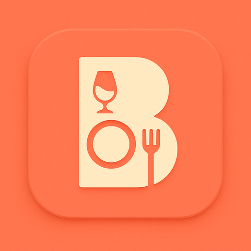
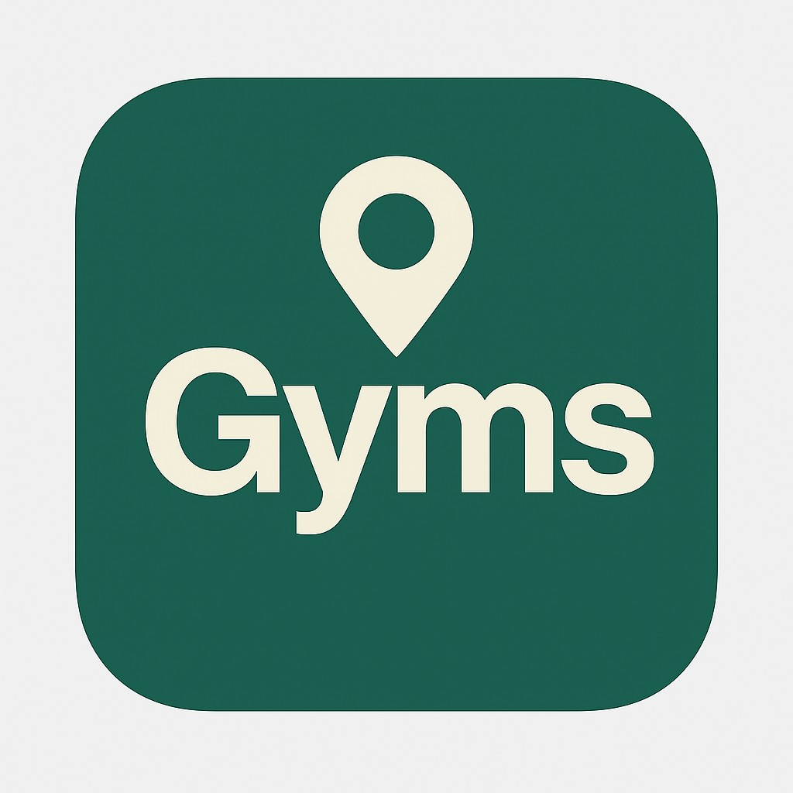

Barapp
App para bares: carta digital, pedidos, reservas y gestión pensada para la gastronomía nocturna.
Desarrollo digital · Resistencia, Chaco
Catálogos online, control de stock, facturación, turnos, pedidos y más. Soluciones a medida para comercios y emprendedores que quieren dejar atrás Excel, cuadernos y procesos manuales.
Te respondemos en menos de 24 hs con una orientación clara, sin compromiso.
Panel del negocio
Ventas, stock y pedidosCarta digital QR actualizada
ActivaReserva para las 21:30
ConfirmadaPago con Mercado Pago
AprobadoQuién está del otro lado
Llevo poco más de un año trabajando como programador y me especializo en convertir necesidades concretas de negocios en herramientas digitales que realmente se usan: apps, paneles web y sistemas de gestión.
Simple desde el primer mensaje
Vos nos contás qué querés mejorar, qué problema te está frenando o qué idea tenés. Nosotros te ayudamos a ordenar la necesidad, definir prioridades y convertirla en una solución concreta.
Contar mi caso por WhatsApp →Proyectos reales
Cada proyecto nace de una necesidad concreta. Estos son ejemplos reales de lo que podemos hacer para tu negocio o idea.

App para bares: carta digital, pedidos, reservas y gestión pensada para la gastronomía nocturna.

App para gimnasios: ubicación, información de centros y experiencia pensada para el usuario fitness.
Panel de gestión para kioscos, carnicerías, pollerías y comercios. Ventas, stock, caja y reportes en un solo lugar.
Gestión de pacientes, historial clínico, agenda de turnos y seguimiento para consultorios odontológicos.
Adaptación del sistema multirubro para barberías: turnos, clientes, servicios y caja desde el celular.
Catálogo digital para vender alimentos y productos para mascotas. Proyecto en desarrollo.
Problemas que vemos todos los días
Muchos comercios crecen con WhatsApp, Excel, cuadernos y buena voluntad. Funciona al principio, pero después aparecen errores, tiempo perdido y clientes que se van.
Es difícil saber qué se vendió, cuánto quedó en caja y dónde se pierde plata.
La información queda repetida, incompleta o depende de una sola persona.
Clientes potenciales no encuentran el negocio, la carta, los turnos o los pedidos.
Mensajes perdidos, horarios pisados y mucho tiempo respondiendo lo mismo.
Tenés una app en mente, pero no sabés por dónde empezar ni cuánto necesitás.
El negocio necesita orden, pero no está claro qué sistema conviene implementar.
Mandanos un mensaje y te decimos qué tipo de sistema podría resolverlo.
Soluciones a medida
Herramientas pensadas para tu forma de trabajar: simples para usar, serias para mostrar y preparadas para crecer cuando el negocio lo necesite.
Adaptado a cada negocio
No todos los negocios venden, atienden o administran igual. Definimos módulos, permisos y pantallas según lo que realmente necesitás operar todos los días.
Ventas, turnos, stock, pedidos, pagos, usuarios, contenido, reportes o reservas.
Panel para dueño, empleados, administradores o clientes, cada uno con su acceso.
Podés empezar con lo esencial y sumar funciones cuando el negocio lo pida.
Menos improvisación, más control
Sistemas que podemos crear
Ejemplos de sistemas posibles. Cada uno se ajusta al rubro, tamaño, presupuesto y etapa de tu negocio.
Para comercios que quieren dejar de depender de anotaciones y planillas sueltas.
Para ordenar pedidos, mesas, caja, reservas, delivery, cocina y estadísticas.
Para consultorios que necesitan agenda, pacientes, historial, pagos y seguimiento.
Para manejar turnos, clientes, servicios, caja y recordatorios desde el celular.
Catálogo digital para vender alimentos y productos, con pedidos y gestión de stock.
Para emprendedores, startups o proyectos digitales que recién empiezan.
MVPs para nuevas ideas
No siempre hace falta construir todo desde el día uno. Un MVP te permite lanzar una versión inicial, probar con usuarios reales, aprender y mejorar con menos riesgo.
Elegimos las funciones mínimas para que la app tenga valor desde la primera versión.
Priorizamos lo que conviene construir ahora y dejamos una hoja de ruta para crecer.
Probás la idea con usuarios, clientes o inversores antes de invertir en una versión completa.
Contanos qué querés crear y vemos cuál sería la primera versión inteligente.
Cómo trabajamos
Escuchamos qué querés resolver, cómo trabajás hoy y qué resultado esperás.
Definimos si necesitás una app, un sistema web, un panel o una automatización.
Te explicamos alcance, etapas, tiempos y prioridades con palabras claras.
Construimos una solución prolija, moderna y preparada para crecer.
Revisamos el funcionamiento, ajustamos detalles y dejamos todo estable.
Podés sumar mejoras, mantenimiento o nuevas funciones luego del lanzamiento.
Ejemplos de uso
“Tengo un kiosco y quiero controlar ventas, stock y facturación.”
“Quiero una app con catálogo para vender alimentos de mascotas.”
“Tengo un bar y quiero carta digital, reservas y pedidos.”
“Tengo un consultorio y necesito ordenar turnos y pacientes.”
“Tengo una barbería y quiero manejar turnos desde el celular.”
“Tengo una idea de app pero no sé por dónde empezar.”
Qué pasa después del primer mensaje
Contanos qué necesitás, aunque sea en pocas palabras. No hace falta tener todo claro.
Te hacemos algunas preguntas para entender el problema y orientarte con honestidad.
Te mandamos alcance, etapas y prioridades en un lenguaje claro, sin tecnicismos.
Preguntas frecuentes
No. Podés escribir con una idea general, un problema o una necesidad. Te ayudamos a ordenar prioridades y definir qué conviene construir primero.
Sí. De hecho, muchas veces conviene empezar por una primera versión útil y sumar módulos cuando el negocio ya la está usando.
Sí. Según el caso, podemos crear apps móviles y también sistemas web que funcionan desde celular, tablet o computadora.
Estamos en Resistencia, Chaco, pero trabajamos con clientes de todo el país de forma remota. La comunicación es por WhatsApp, videollamada o como te resulte más cómodo.
Depende del alcance, las funciones y la etapa del proyecto. Por eso primero entendemos qué necesitás y después armamos una propuesta clara.
Sí. El primer paso es contar tu caso por WhatsApp para orientarte y ver si una solución a medida tiene sentido para tu negocio.
Empecemos por una charla
Escribinos desde Resistencia, Chaco o cualquier parte del país. Contanos qué necesitás y vemos juntos si conviene una app, un sistema, un panel administrativo o una primera versión para empezar.